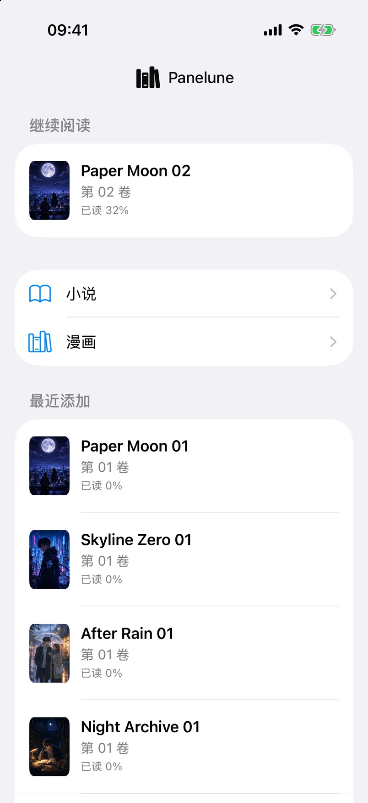
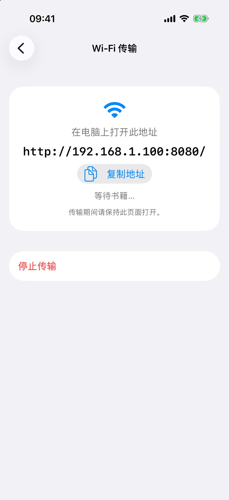

你的个人书库
将漫画与小说收纳在一起，按系列（Series）和卷册（Volumes）整理。
一款注重隐私、以本地存储为核心的漫画与 EPUB 小说阅读器。整理你的藏书，享受舒适阅读，让书籍留在自己的设备上。
Panelune 1.2.0 新增 iPhone 支持，为 iPhone 和 iPad 带来更完善的阅读体验。
真实 Panelune 界面，使用原创演示书籍。iPad 截图为英文界面。




将漫画与小说收纳在一起，按系列（Series）和卷册（Volumes）整理。
调整字体、浏览目录、恢复阅读进度，沉浸在小说之中。
自由选择交互式翻页或连续纵向滚动。
将选定书籍放入独立的私人书库，通过设备认证保护访问。
通过“文件”关联文件夹，或通过局域网 Wi-Fi 从电脑传输书籍。
导入后即可离线阅读，无需账号，也无需开发者托管的云端书库。
1.2.0 带来更完善的 EPUB 渲染、排版与字体设置，更流畅的漫画交互式翻页，以及 iPhone 和 iPad 上更可靠的阅读进度恢复。
从导入已有书籍开始，把本地书库整理得更好用。
书在电脑上，可以用 Wi-Fi 传输保存到 Panelune；书已放在 iPad 的“文件”中，可以关联文件夹，在原位置读取。
“系列”把相关书籍归在一起，“单卷”是其中的一本书。导入后可以调整名称和分组，再从上次阅读的地方继续。
应用支持 English、简体中文、繁體中文、日本語和 한국어。
English · 简体中文 · 繁體中文 · 日本語 · 한국어
免费版最多创建 3 个系列，已有系列可继续添加卷册。Panelune Pro 解除系列数量限制。
一次性购买，无需订阅。
具体价格以应用内所在地区显示为准。